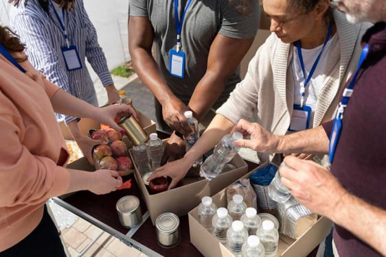

En la Iglesia de Cristo, creemos que el Evangelio no solo se predica con palabras, sino con manos dispuestas a servir. Nuestra presencia en Santa Cruz busca ser un reflejo de la compasión de Jesús, atendiendo las necesidades físicas y emocionales de quienes más lo necesitan en nuestras comunidades.
A través de nuestro programa de Canastas Solidarias, brindamos alimentos de primera necesidad a familias en situación de vulnerabilidad y adultos mayores. Creemos que nadie debe irse a dormir con hambre mientras la iglesia esté cerca.
Invertimos en el futuro de Santa Cruz mediante:
Apoyo Escolar: Espacios de tutoría para niños del barrio.
Escuela de Valores: Enseñamos principios bíblicos y ética cristiana para formar ciudadanos íntegros.
Talleres de Oficios: Capacitamos a jóvenes en habilidades prácticas para facilitar su inserción laboral.
Santa Cruz cuenta con centros médicos de referencia donde muchas familias llegan desde provincias. Nuestro equipo de Capellanía y Servicio realiza visitas periódicas para brindar soporte espiritual y oración.
Entregar kits de higiene y refrigerios a los familiares que esperan en los exteriores de los hospitales.
Realizamos charlas y seminarios gratuitos abiertos a toda la comunidad sobre:
Prevención de la violencia familiar. Finanzas saludables en el hogar. Crianza de hijos con principios cristianos.
"Porque tuve hambre, y me disteis de comer; tuve sed, y me disteis de beber; fui forastero, y me recogisteis." — Mateo 25:35
Nuestra labor social se sostiene gracias al corazón generoso de nuestros miembros y voluntarios. Si deseas ser parte de este impacto en nuestra ciudad, puedes colaborar de tres formas:
Siendo Voluntario: Donando tu tiempo y talentos.
Donaciones en Especie: Alimentos no perecederos, ropa en buen estado o útiles escolares.
Aportes Económicos: Destinados exclusivamente a los fondos de asistencia social.

DONA ALIMENTOS PARA SEGUIR APOYANDONOS
DONA UN INSENTIVO ECONÓMICO